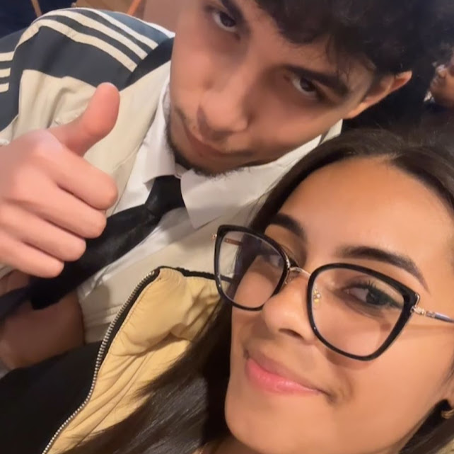

Para uma garota especial
Você, que transforma linhas de código em verdadeiras obras de arte, também transforma minha vida em algo mais bonito só por existir. Até quando fica brava comigo, você continua sendo a pessoa mais linda do mundo. Sua luz não se apaga, nem mesmo nos dias mais difíceis.
Kevillyn, hoje o dia amanheceu mais devagar sem o seu sorriso iluminando tudo ao redor. Saber que você está doente me deixa preocupado, mas ao mesmo tempo, me faz lembrar o quanto você é forte e determinada. Sei que em breve estará de pé novamente, pronta para encarar qualquer desafio com essa força de vontade incrível que você tem — a mesma força que me encanta todos os dias.
Descanse, se cuide, e saiba que você é sempre, sempre importante. Eu estou aqui, torcendo por você e pronto para o que você precisar. Fica bem, minha programadora favorita ❤️.
motivos do por que sou seu fã
Kevillyn, sou seu maior fã, sabia? Desde o primeiro momento em que te vi, ficou claro para mim que você era especial. Cada olhar que você me lança é como uma faísca que ilumina meu mundo inteiro. Eu amo o jeito que você olha para mim, como se enxergasse além de tudo, como se soubesse o que eu sinto antes mesmo de eu dizer.
E, meu Deus, como eu amo o seu jeito de retribuir o meu amor, por que mesmo com mão tão pequenas, elas valem mais que tudo nesse mundo, e porra, você é a melhor coisa que aconteceu na minha vida em anos, sei que foi muito dificil no começo, pois querendo ou não, mudar do nada é estranho... Mais saiba, tudo que eu fiz foi por você, e sempre será, pois você não sai da minha cabeça

sabe Por que amo the office, e tambem amo te mandar? Bom, acho que somos tipo Jim e Pam. O jeito como trocamos olhares, as brincadeiras que só nós entendemos, e como sorrimos juntos nos momentos mais simples. Estar perto de você é como estar no meu lugar favorito do mundo, aquele onde tudo faz sentido. Eu admiro tanto quem você é, sua força, inteligência, e o jeito como você transforma o ambiente ao seu redor. Ver você brilhando, e ver você empolgada quando esta consequindo fazer as coisas me dá mais certeza de que você vai conquistar mais que o mundo, porque você é capaz de tudo. Eu quero estar ao seu lado em cada passo dessa jornada, mesmo que eu tenha que da mil explicações do por que não usar "BR" no codigo, mais alem disso, eu quero estar rindo, brincando, e te apoiando sempre. Com você, cada dia é melhor que o anterior. E eu sei que o futuro é foda, mais peço a Deus para ser o homem que estara do seu lado. ❤️